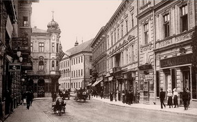
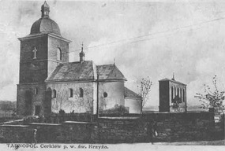
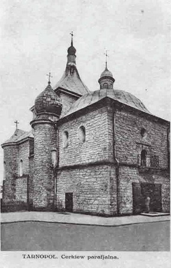
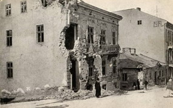
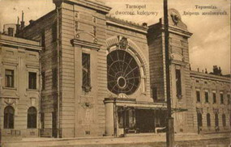
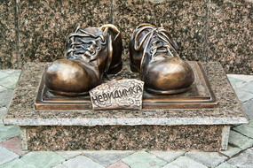
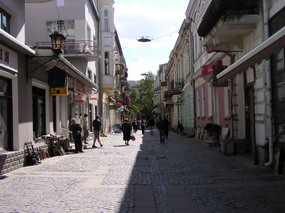

ТЕРНОПІЛЬ - МІСТО, ЯКЕ НЕМОЖЛИВО ЗАБУТИ
Місто, що несе в собі відгомін минулого. Його люблять за спокій вулиць та затишок кав’ярень, бруківку, що виблискує після дощу. Одне з небагатьох, де перехожі ще посміхаються один одному на вулиці. В Тернополі іще можна почути на вулицях дивацьку галицьку говірку, пройтись по так званій «стометрівці», сучасному бульварі Тараса Шевченка, що була колись місцем зустрічей чи не для всіх жителів міста, та відчути плин років, що невпинним потоком несуться на хвилях часу.
Довоєнний Тернопіль
Історія його давня й трагічна. Рахунок віку ведуть з 1540 року, коли в літописах натрапили на першу згадку про Тернопіль. Місто пережило турецько-татарські навали, що хвилями накочувались на тутешні землі, пекло Першої та Другої світової війни, бомбардування, коли по всьому місту вціліли лише п'ятнадцять відсотків будівель, часи радянської перебудови. В буремні дев’яності саме в Тернополі вперше підняли жовто-блакитний стяг незалежної України. А у 2010-му місто відзначило своє 470-ліття. Тернопіль – це місто-парк. Так відгукуються про нього приїжджі. Величезна кількість зелені й квітів з весни і до пізньої осені тішить мешканців. Особливо ж гарним та святковим місто стає у травні, коли розцвітають каштани, яких дуже багато на тернопільських вулицях. Хоча природні умови Тернополя не надто сприятливі. Вологий клімат міста робить не надто морозяні зими пронизливо холодними. Недарма серед тернополян побутує легенда, що колись місцина, де зараз розташований Тернопіль, була місцем заслання каторжан за особливо важкі злочини. Вологість, дошкульні вітри та важка робота приводили до розвитку пневмонії та сухот, що практично не піддавались лікуванню у той час. За що ж тернополяни так люблять своє місто? І чому воно западає в душу туристам, що хоч раз відвідали його? Чим славиться Тернопіль, і що вирізняє його з-поміж інших міст? Почнемо, мабуть, з того, що першим спадає на думку при слові «Тернопіль».
ТЕРНОПІЛЬСЬКИЙ СТАВ
Панорама ставу
Головна окраса міста, без сумнівів, впевнено тримає пальму першості у пам’яті всіх, хто коли-небудь відвідав Тернопіль. Ця дивовижа для міського жителя – озеро, що прямісінько у центрі міста, - улюблене місце відпочинку кожного тернополянина. Став практично ровесник Тернополя. Ще у 1671 році французький мандрівник Ульріх фон Вердум згадує, що місто з трьох сторін оточує велике озеро та непрохідні болота. Під час одного з нападів татар, у 1675 році, воду із ставу спустили, тож з часом водойма замулилась, заросла. Особливо занедбаним став був під польським пануванням, між двома світовими війнами. А у голодні повоєнні роки кінця 40-х ХХ ст. на місці ставу були городи, де тернополяни вирощували сякі-такі овочі, щоб прохарчуватись. Відродження ставу почалось у квітні 1956 року, коли радянська влада взялась до облаштування водойм області. Щоб відновити став, відремонтували дамбу, для зміцнення берегів використали 2500 квадратних метрів облицювального каменю. Рівень води піднявся, і площа водойми сягнула 400 га. До речі, бруківка, якою викладена дорога понад дамбою, була покладена ще за поляків, періодично проводять лише косметичний ремонт, і дорога надійно служить уже не перше століття.
АРХІТЕКТУРНІ НАДБАННЯ: ЗАМКИ, ЦЕРКВИ, ПАМ’ЯТНИКИ
Як і в кожному західноукраїнському місті, у Тернополі є свій замок. Вік його більш ніж поважний – початок спорудження датується 1540 роком. Збудований він був Яном Тарнавським, для захисту від ворогів обнесений високим частоколом та ровом, з боків спорудили високі башти. От тільки зараз більшість гостей міста не вірять, що перед ними славний замок-герой – надто непримітна, сіра, радянського типу триповерхова будівля височить над ставом. Воно й не дивно, адже тернопільський замок пережив величезну кількість руйнувань та реконструкцій, остання відбулась у 1954 році. Зараз в приміщенні замку школа греко-римської боротьби, адміністративні установи. Проте тернополяни не втрачають надії, що колись замок знову відграватиме свою важливу роль в історії міста, а не лише в оповідях про героїчне минуле.
Надставна церква
На пагорбі біля ставу височіє Церква Воздвиження Чесного Хреста, або, як її називають тернополяни, Надставна церква чи просто – церква над ставом. Побудована вона у ренесансному стилі. Перші відомості про церкву датуються 1570 роком, хоча побутує думка, що знаходилась вона на цьому пагорбі ще за часів Галицько-Волинського князівства. Велика вежа і дзвіниця були добудовані у 1672 році. Лихоліття війни не оминули церковні стіни, було знищено дзвіницю, цінний іконостас. Остаточна реконструкція храму відбулась у 1954 році, проте довгий час його використовували не за призначенням. Існують перекази, що у Надставній церкві знаходився чудотворний образ Пречистої Діви, з яким пов’язана цікава легенда. Переказують, що колись, під час величезної татарської навали, козаки з міщанами відбивались від загарбників маючи опору лише у Надставній церкві, а решта жителів зібрались біля чудодійної ікони і благали захисту у Матері Божої. Збоку по-своєму молився старий єврей, аж раптом побачив якусь пані, що стелила над церквою довге полотно, і татарські стріли самі почали вертатись до стрільців. Вбігши в церкву, він остовпів від здивування, бо з ікони на нього дивилась та ж пані. Між замком та Надставною церквою, на місці так званих «Єлисейських полів», раніше був цілий район – Підзамче, де жили міські ремісники. Вир другої світової не залишив по собі в тих місцях жодного будинку. Головна архітектурна окраса Тернополя знаходиться трохи далі від ставу – Домініканський костел, чи Катедральний собор Непорочного Зачаття Пресвятої Діви Марії. Спорудження його тривало з 1749 до 1779 рр. Храм – взірець пізнього європейського барокко, вінчають його дві шатрові вежі та баня овальної форми. Сама будівля носила також і оборонний характер. Мало хто й знає, що катедру спорудили на руїнах давньоруської церкви. Колись ще радянська інспекція з’ясувала, що Тернопіль має ходи у старій частині міста. Перекази стверджують, що плетиво лабіринтів хитро поєднується між собою, і один із ходів веде прямісінько до катедри. Колись ці лабіринти використовували як захист городян під час турецько-татарських навал. У 1944 році храм зазнав найбільших за своє життя руйнувань. Сім днів радянська армія штурмувала гарнізон костелу. З двох боків його обстрілювали 152-міліметровими гарматами, поливали само запалювальною сумішшю. З гарнізону не вижив ніхто, та й самій будівлі було завдано непоправної шкоди. Так і не вдалося відновити тодішні елементи оздоблення та дивовижні розписи.
Церква Різдва Христового
Руїни міста у час Другої світової війни
Ще один старовинний храм – церква Різдва Христового, або Середня, на розі вулиць Руської та митрополита Мстислава, одна з найдавніших споруд міста. В давнину до неї прилягали міські оборонні вали, то й не дивно, що товщина стін церкви сягає 2 м. Перша згадка про церкву відноситься до 1655 року. За переказами у Середній церкві молився Богдан Хмельницький під час війни з татарами. Час – невблаганний руйнівник. Та ще невблаганніша людина, що своїми руками знищує власні ж витвори. Під час Другої світової війни практично весь центр міста було зруйновано під натиском ворожих літаків. Ті, хто пережив ці страшні та голодні часи, й досі згадують, як люди переховувались у підвалах будинків під час бомбардувань, та у важкі повоєнні часи стояли в довжелезних чергах за буханцем глевкого хліба. У 1944 році зруйновано було практично 85% будівель міста. Те, що вберегла війна, довершили люди. Так, жертвою більшовицького режиму став парафіяльний костел на розі Руської та Міцкевича. Велична споруда, виконана у неоготичному стилі, вражала витонченістю та довершеністю. Внутрішнє оздоблення, вітражі відомого польського художника Яна Фелікса Виґживальського, а, особливо, різьблення навколо вівтаря вражали красою. Вежа-шпиль, що досягала 62 метрів, височіла над усім містом. Красень-костел, що вцілів серед вибухів Другої світової, був дощенту зруйнований радянською владою. Офіційна версія причини знесення – аварійний стан будівлі. Справжні причини такого вироку крились у ідеологічній площині. Влада не могла стерпіти, щоб у самісінькому центрі міста, просто у неї на очах, стояла релігійна святиня. У 1949 році вирок було підписано, проте виконання його затягнулося. Спочатку була зруйнована вежа костелу. У 1954 році над містом декілька днів лунали вибухи – зносили парафіяльний костел. На місці святині радянська влада згодом, немов насміхаючись, побудувала торговище – міський універмаг.
Пам’ятка архітектури місцевого значення у Тернополі – його залізничний вокзал. Роботи із прокладання залізниці почались в червні 1869 року, а перший потяг прибув до Тернополя у грудні далекого 1870 року. Перший залізничний вокзал, або, як його тоді називали на польський манер, «двожец», був споруджений у 1870 р., а у 1903 р. його значно розширили. Фронтон будівлі прикрашало велике коло дзеркального вікна площею 65 квадратних метрів. На жаль, у такому вигляді вокзал до нас не дійшов. Дві світові війни, більшовицький наступ добряче познущалися над життям вокзалу. В 1944 році його було зруйновано дощенту, а відбудовано аж у 1952 р. Щодо пам’ятників, то їх в Тернополі зараз більше 20. Серед них пам’ятники Тарасу Шевченку, Івану Франку, князю Данилу Галицькому, Івану Горбачевському та багато інших. На жаль, щонайменше п’ять пам’ятників не збереглися до нашого часу. У серпні 2010 року в Тернополі відкрили пам’ятник легендарній землячці – оперній співачці Соломії Крушельницькій. Це поки що єдина в Україні скульптура прими у повен ріст. Також у місті знайдеться чимало цікавих пам’ятників, починаючи від пам’ятника Людині-неведимці та водопровіднику, й закінчуючи пам’ятником бджілці-трудівниці.
Пам'ятник неведимці
Сумна історія одного з улюблених пам’ятників городян, що має назву «Випадкова зустріч» - подарунка місту від американського мецената Джона Звожека. Початково скульптура виглядала, неначе дві знайомі зустрілись і присіли погомоніти під розлогими липами. У 2003 році злодійські руки мисливців за кольоровими металами украли одну із панянок. Зловмисників так і не було знайдено, тож тепер її подруга сидить самотою. Біля пам’ятника часто зупиняються пофотографуватись як тернополяни, так і гості міста.
ІСТОРИЧНІ ВІХИ НА ШЛЯХУ ДО НЕЗАЛЕЖНОСТІ
Поняття свободи – в крові тернополян, воно передане поколіннями предків, що боролись за свою країну. В буремному 1918 році Тернопіль був проголошений столицею молодої Західно-Української народної республіки. Переломним моментом в житті Тернополя став і 1990 рік. Тоді, 26 квітня, в центрі міста, на театральній площі, було вперше в Україні піднято й освячено український національний прапор. Активною була й підготовка до проведення загальноукраїнського референдуму на підтримку Акту про незалежність і президентських виборів 1 грудня 1991 р. Вперше в політичній історії України політична боротьба велася в умовах політичного плюралізму, відсутності диктату державних та ідеологічних структур, цивілізованого суперництва різних партій та рухів. Сотні тернополян у складі пропагандистських груп брали участь в агітаційній роботі у східних областях України. Свідченням небаченого патріотичного піднесення тернополян стали наслідки референдуму щодо державного суверенітету. Близько 99% виборців – найбільше в Україні – прийшли на виборчі дільниці, і , за винятком 1%, проголосували на підтримку незалежності України. Визначальною рисою політичних сил краю є здатність до консолідації у відповідальний для долі держави час, ініціювання державотворчих процесів, готовність захищати здобутий суверенітет та ідеали демократичного суспільства. Варто нагадати, що тисячі тернополян, разом з мільйонами інших громадян України, захищали під час Помаранчевої революції своє право жити у суверенній демократичній державі. Ї не їх вина, що ідеали демократичного майдану сьогодні не повністю втілено у життя. На жаль, темпи оздоровлення економіки в державі, областях і містах України не відповідають потребам суспільства. Тисячі тернополян працюють за межами області та за кордоном. Вони намагаються піднести добробут своїх сімей, забезпечити освітою, житлом своїх дітей, рідних на жаль, ще відсутні механізми ефективного залучення заробленої нашими земляками валюти для реконструкції та технологічної модернізації економіки міста та області. Разом з тим, сучасний Тернопіль – це зручне для проживання місто, яке має розвинуту соціальну інфраструктуру, транспортну систему, парки відпочинку, центри дозвілля тощо.
ТЕРНОПІЛЬ СУЧАСНИЙ
Попри всі негаразди, в Тернополі вирує життя. Тернопіль став центром проведення різноманітних культурно-мистецьких фестивалів, музичних конкурсів тощо. Драматичний та ляльковий театри, філармонія, низка арт-галерей – незважаючи на репутацію провінційного міста, Тернопіль здивує насиченим культурним життям.
вулиця Валова
Будівля драматичного академічного театру ім. Т. Шевченка прикрашає головну площу міста. Фронтон його оздоблений вісьмома колонами та малими оздоблювальними барельєфними формами. За більш ніж 70 років існування на його сцені побувало чимало відомих митців. Під керівництвом нині покійного Михайла Форгеля тернопільський театр зазнав слави одного з найталановитіших в Україні. Тернополяни регулярно гастролюють, беруть участь у всеукраїнських та зарубіжних фестивалях. Нове поповнення для театральної сцени готують музичне училище ім. Соломії Крушельницької та Тернопільський національний педагогічний університет. Якщо ж ви потрапите в Тернопіль в листопаді, то матимете змогу відвідати справжнє свято Мельпомени – «Тернопільські театральні вечори». Міжнародний театральний фестиваль щороку відкриває новий театральний сезон. На фестиваль з’їжджаються близькі по духу театри України, Польщі, Росії, інших країн ближнього зарубіжжя. Сцена Тернопільської обласної філармонії відома багатьом українським співакам. Заснована філармонія 1939 року. В її історії – виступи легендарної Соломії Крущельницької. Тут колись читав свого «Мойсея» Іван Франко. Малярська богема надає перевагу тихим галереям та виставкам. Побачити творчість тернопільських, та не тільки, художників можна у картинній галереї обласної Спілки Художників, що в самісінькому центрі міста. За рік тут проходить до двадцяти різноманітних виставок та експозицій. У приватній арт-галереї для огляду виставлено близько 450 художніх робіт різних стилів та жанрів. Регулярно змінюються експозиції та виставки майстрів у мистецькій галереї «БункерМуз» - першій в Тернополі позаакадемічній галереї сучасного мистецтва, що розташована у підвалі будинку ще довоєнних часів. Фестивальне життя Тернополя теж не відстає від решти міст. Щороку тут проводиться дитячий фестиваль пісенного мистецтва «Кришталевий жайвір», що став стартом для багатьох талановитих молодих виконавців. Традиційними вже стали фестиваль борщу, вишиванки та фестиваль меду. Перший в Україні фестиваль рок-музики «Нівроку» проводиться в Тернополі з 1991 року. Головне гасло фестивалю – «Слухай своє!», і він збирав на своїй таких відомих українських виконавців, як «Мертвий півень», «Тартак», «Плач Єремії», «Океан Ельзи», і багатьох інших. Завдяки цьому фестивалю Тернопіль впевнено здобув славу рок-міста. Місто Тернопіль уславилося своїм культурно-мистецьким життям. І це традиція з глибоким корінням. Лише перелік видатних діячів культури та мистецтв, що походять чи працювали тут, займає не одну сторінку. Це і Соломія Крушельницька, видатна українська співачка, педагог, що здобула світове визнання; єврейський письменник, діяч освіти Йосиф Перль; видатний український поет, письменник, публіцист, громадсько-політичний діяч Іван Франко, українські письменники Юліан Опільський, Василь Стефаник, Богдан Лепкий, літератори Павло Тичина, Максим Рильський, видатні діячі театрального мистецтва Микола Садовський, Наталя Ужвій, Лесь Курбас, Михайло Форгель; композитор, основоположник української класичної музики Микола Лисенко та багато інших. Тернопіль славиться і видатними вченими, які народились або працювали у місті. Вартують поваги і памяті імена Алєксандра Брюкнера, Івана Пулюя, Івана Горбачевського, Степана Рудницького, Михайла Юрківа та багатьох інших науковців. З Тернополем різною мірою пов’язана плеяда політичних і громадських діячів минулого і сучасності, зокрема родина Барвінських, Вячеслав Чорновіл, Роман Громяк, Ігор Герета та багато інших патріотів краю та України.